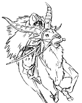
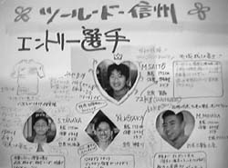
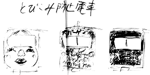

制作日誌 1996年12月
96.12.01（日）
作画部門の1997年度新人研修選考２次試験が行われる。宮崎監督が休み時間にトリケラトプスの骨を見せるなど、リラックスさせようと務めたが、結局採用はゼロ。
96.12.02（月）
近藤勝也氏が今日から原画に参加。CUT1466~1500まで34CUT。
出版部助手、及びインターネット担当として石光紀子さんが今日から参加。
絵コンテ1467～1543まで79CUT分完成、計1,532CUT118分29,25秒となる。宮崎監督曰く「もうここまで来れば完成したも同然」。ほんとか？
近藤喜文氏発案で「絵コンテ・完成したも同然」記念パーティ（それほどのこともないか）をメインスタッフコーナーで行う。メニューは相変わらずワンパターンのピザ。
96.12.03（火）
先日事故に巻き込まれた高坂氏が、新しい自転車に、クラインのフレームに97年型デュラエースを組んだ（マニアックですみません）ロードを買うという噂が広まっている。高坂氏がツール・ド・信州に、コース的に不利なマウンテンバイクで参加することに唯一の希望を見いだしていた、昨年までのジブリ自転車王・斎藤氏は「夢が消えていく…」とあきらめ顔（実際は再びマウンテンバイクを購入）。

|
 |
96.12.06（金）
デスク西桐氏がスタジオシータに行く途中、火事の大渋滞に巻き込まれる。聞くところによると場所は田無北口の再開発地域。地上げ屋が放火か。おーこわ。
宮崎監督と保田さんが東映動画時代の同僚の御通夜に出かける。東映動画一の美人で、宮崎監督が彼女と初めてすれちがった時、あまりの美しさにめまいがしたとか。
撮影室に溜まっていた撮済みを2階の倉庫に入れるが、もう満杯で入りきりそうもない。まだこれから4、5万枚のセルが上がってくるわけだから、何処かに収用場所を確保しなければならない。
96.12.07（土）
職場委員会が行われる。報告事項は正月休み、制作進行状況、宣伝方針、予告編等。
今年の忘年会は、新人達が中心となって企画されることに。
96.12.08（日）
仕上げ、美術、特殊効果部門の2次試験が行われる。仕上げ5人、美術7人、特殊効果2人の計14名。結果は特殊効果の1人のみ採用となる。
96.12.09（月）
宮崎監督が髭をそって出社。今まであった威厳がどっかへ吹っ飛び、10歳程若返ったよう。そのあまりのイメージの変わりようにスタッフは戸惑い気味。
96.12.10（火）
車2台にに絵の具を満載してスタジオロビンへ仕上げ入れに向かう。
田中敦子氏手持ち終了。早速追加打ち合わせ。1501～1520Aまで20CUT。
96.12.11（水）
宮崎監督が、絵コンテ完成分のうち最後の１ページを描き直す。
制作居村君がめでたく運転免許の学科試験に合格。
96.12.12（木）
朝11時半に警察からTELあり。原画Ｙ氏が出勤途中に事故。小金井市緑町で、バイクで出勤途中ハンドル操作を誤り、電柱に激突、空中を20メートル程飛んだらしい。病院での
検査が進むうちかなり重傷なのが判明する。腰の骨、骨盤、背骨の骨折、それに加え、命を落とすことさえある内臓からの出血。医者に、ここ二三日で出血が止まらなければ危ないと言われる。
最初の事故の一報では、骨折程度との連絡だったので「原画をどうするんだー」と怒っていた宮崎監督だが、重い病状の報告を聞くにつれ、心配でいてもたってもいられなくなってきた様子。
17時半頃に病院に詰めていた総務荒井氏から、出血が止まり命の危機は乗り越えた、との知らせが入る。宮崎監督を含め、社内中に安堵のため息がもれる。
近藤勝也氏がレイアウトの第一弾をあげる。やっぱり上手い、早い。
宮崎監督、鈴木プロデューサー、高坂、近藤喜文両作画監督を交えて、Ｙ氏が持っていた14CUTの原画を誰に配分するか話し合いが行われる。現在の原画マンの中にはこれ以上余裕のある人物はなく、宮崎監督からの提案で、近藤喜文さんに描いてもらうことに。
96.12.13（金）
Ｙ氏の怪我は、最低入院3カ月、完全に直るまでリハビリを含め約一年かかるとのこと。
絵コンテ前回分の1541、1542の2CUTをボツとし、1542～1555まで14CUTアップ。計1544CUT、119分13.25秒.
箕輪さんの打ち合わせ。1542～1555まで14CUT。
鈴木プロデューサーから「デジタル合成のCUTが多すぎないか。もう一度無駄なデジタル合成がないかチェックせよ」の指示が出る。奥井さんと後半に出てくるタタリ神の黒色オーラをデジタルからブラシ処理に変えられないか検討を始める。
96.12.14（土）
朝11時から、毎年恒例になったジブリ・キャラクター商品部によるグッズ即売会が行われる。毎度の近藤喜文氏、川端氏らによる買い占めも起こり、目当てのものを買えない人も出る。
ラッシュチェックが行われる。いくつかリテークが出た中で問題になったのがCUT34。ブラシが薄くて下の蛇状の物体が見えすぎる点や、本体の影のような部分の色が薄くて、背景と重なってしまう点が問題になる。それぞれのセルが100枚づつあるCUTなので、直しを入れるのを躊躇したが、いくつかの手法を組み合わせ、他のCUTと合わせるように修正することに。
コミックボックスの才谷氏と三好君が来社、鈴木プロデューサーに「もののけ姫」特集号の企画を持ってくる。鈴木プロデューサーは「耳をすませば」特集号の実績があるだけに「なんでも好き勝手やっていいよ」と返事。
96.12.16（月）
近藤喜文氏、吉田君の受け持ち分1041～1043、1052～1062まで14CUTを打ち合わせ。
美術の黒田さんから、今月20日に上がる予定だった、背景CUTが上がりそうにない、と話しがある。とりあえず、少し期限を延ばし、上がるのを待つことにする。どっちみち引き上げても描く人がいないし…。
96.12.17（火）
デイビッド君からFAXが送られてくる。今月26日に来日し、友人宅に居候をしながら部屋を探したいとのこと。日本に来たらすぐ連絡をくれるそうな。
今日は野中さんの36回目の誕生日。野中さんの寂しい誕生日をみんなで祝おうと宮崎監督が「野中さんお誕生日おめでとう」の名前入りのケーキを購入する。みんなに「ハッピーバースデー」を歌ってもらう中、36本の蝋燭を一気に吹き消す野中氏。ところで、野中氏と共に制作、出版部の三十路花の独身トリオを組む残りのデスク田中と出版野崎は「俺のときには何も買ってくれなかった…」と小学生のような駄々をこねている。
96.12.18（水）
野中氏が昨日の余韻でハッピーな顔をしている。
96.12.19（木）
有冨、石曽根の演助コンビが体調不良でダウン。宮崎監督に言わせると「緊張感がないからだ」ということらしい。因みにＣＧ部では片塰、菅野両氏、作画でも数人が風邪で休んでいる。
浦谷氏が来社。
篠原さん打ち合わせ。篠原さんに担当してもらいたいシーンの絵コンテに、まだ秒数が入っていなかったが、「手空きにはさせん」との宮崎監督の強い希望で打ち合わせが行われる。
96.12.20（金）
宮崎監督が朝から鍼。
年末ビデオの制作が、いつもの年に比べて快調に進んでいる。理由は、撮影部古城君に手伝ってもらいながら、音から映像の編集までの全てをマックを使って進めているからなのだ。いつも大掃除をほっぽらかして忘年会ぎりぎりまで作業をしている演助の伊藤君だが、今年は何年か振りでの大掃除参加が実現するか？
正月休みに出てきたい社員のために、田舎に帰らない演助有冨君に鍵あけをお願いする。宮崎監督が出社しない元旦と２日、それに日曜日以外の毎日。
96.12.21（土）
大塚伸治氏の打ち合わせが行われる。CUT1520A～1541まで23CUT。
ラッシュチェック及び社内ラッシュが行われる。
96.12.22（月）
出社率悪し。演助も来ない。
宮崎監督主催で簡単なクリスマスパーティが行われる。
96.12.23（火）
宮崎監督が、原画の残りCUTの詳細な割り振りを作り、原画メンバーを〈1〉手持ちで一杯の若手 〈2〉手持ちで一杯のベテラン 〈3〉まだ追加できる人 の3班に分けて会議室に集め、最終スケジュールの通達をする。できもしない予定を立てて、スタッフを混乱させるのでは無く、実現可能な○月△日に原画アップを設定し、それに向かって一人一人がスケジュール内にあげる努力をしていくようお願いする。また、原画の助っ人として杉野左秩子氏に連絡を取る。
テレビマンユニオンの浦谷さんが、忘年会のビンゴの景品に、自転車（もちろんツール・ド・信州の強制？参加券付きだ）を提供してくれることに。
96.12.25（水）
浦谷さん来社。取材。
忙しくて忘年会の準備がなかなか進まない。とりあえず食べ物のことだけでも決めておかねば。ということで東小金井のスパゲッティ屋グラツィエにスパゲッティ、ラザニア、オードブル等を注文。また総務古林さんに寿司の注文をお願いする。
会社からクリスマスケーキ支給。総務洞口氏が立川の知り合いのケーキ屋まで取りに行ったらしい。宮崎監督は、「味がいまいち、なぜ立川なのか」としつこく質問してきたが、そんなことは私は知らん。
96.12.26（木）
28日に来る予定だった杉野さんが突然来社する。手伝いたいのはやまやまだが、スケジュールが合いそうもないので、今在籍しているディズニースタジオに帰って相談してくるとのことだったが、すぐにTELで、2月頭から出向でジブリに来てくれると返事がある。
96.12.27（金）
近藤喜文さんが、ついに自家用車をボロイ国産からドイツ製のオペル・アストラに買い換える。宮崎監督は「ようやくあの汚い車を見なくてすむと」と満足げ。「耳をすませば」を監督中に宮崎監督と結んだ３つの約束がようやく果たされたわけだ（「耳をすませば」のパンフレット参照）。
忘年会用ビデオがほぼ完成。あとはＣＧ部片塰氏が作るタイトルを組み込むだけ。奇跡だ（昨年は忘年会が終わる30分前に完成）。来年も古城、伊藤コンビで決まりだな。
96.12.28（金）
午後から大掃除。伊藤君も何年かぶりで参加。
午後５時より忘年会開始。今年は約100人と人数が多い為、立食パーティ。出し物の出来具合だが、伊藤君のビデオは大喝采、新人達の歌や演奏は今一歩の反応に終わる。
| 次のページへ |
| 日誌索引へ戻る |
| 「もののけ姫」トップページへ戻る |